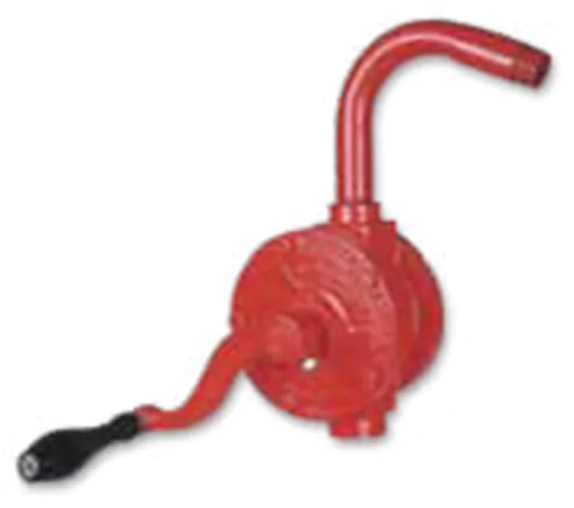

GROZ · Fuel & DEF Handling
ROTARY BARREL PUMPS
CAT NR GNB-20T/SPL · ORD NR 44000
| CAT NR (catalogue number) | GNB-20T/SPL |
|---|---|
| ORD NR (order number) | 44000 |
| Discharge spout | Steel |
| Pump inlet | 3/4” |
| Seals | NBR |
| Suction tube | Telescopic |
Open in the catalogue The catalogue PDF, page 14
From the GROZ Fuel Equipment CAT 400 catalogue. Not yet verified: these details were read from the printed catalogue automatically; check the catalogue page before ordering.